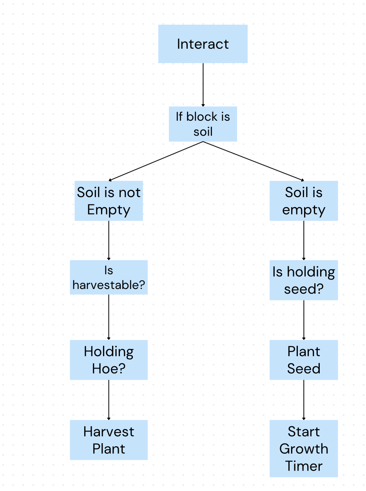
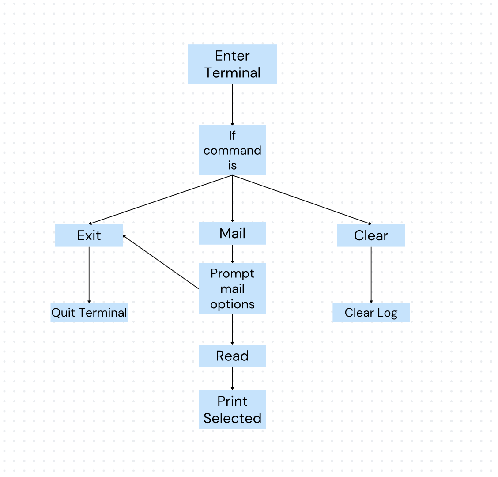
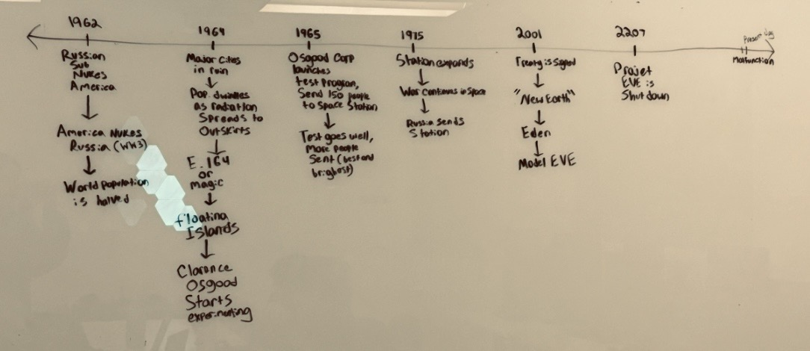
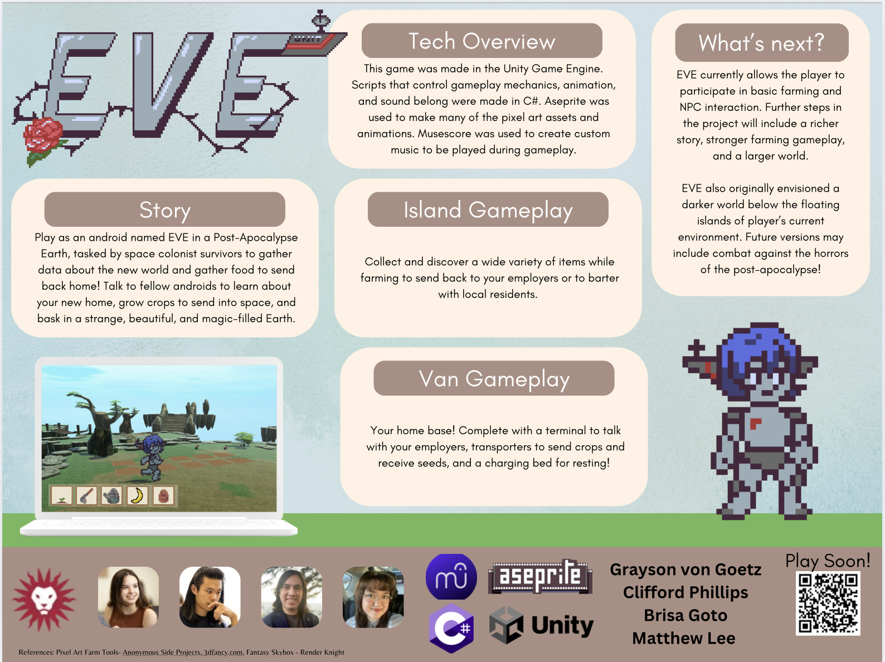

Overview
Eve is a farming simulation game that merges adventure mechanics with resource management. Developed in Unity with stunning 2.5D pixel art and dynamic gameplay elements, Eve invites players to manage crops, complete quests, and explore a richly detailed world.
Key Features
- Dynamic crop growth cycles influenced by weather and time
- Quests and objectives that enhance both gameplay and narrative
- Rich visual design with pixel art rendered in a 2.5D style
- Adaptive soundscapes and immersive music written and composed by me!
Listen to Eve's Music
Original composition by Grayson von Goetz
Design Diagrams




GitHub Repository
Explore the complete project source code and development process.
View Eve on GitHub